Using HyperViewer client program in Emulab
Table of Contents:
- Introduction
- Supported platforms, release notes
- FreeBSD
- Windows
- Linux
- Package dependencies
- Installing hypview
- Getting and unpacking hypview on
Unix/Linux
- Getting and unpacking hypview on
Windows
- Building hypview on Unix/Linux
- Building hypview on Windows
- Running hypview as a script
- Using the hypview Graphical User Interface
- Overview
- Mouse: dragging, rotation, and picking
- Control panel: node controls
- Control panel: mode controls
- File and Experiment opening
- An example
Introduction
hypview is
a client program which runs on your computer, and shows a 3D
view of the
network
topologies for Emulab experiments. In detail, we have wrapped the
HyperViewer in a wxGlade Python graphical user
interface, and connected it to the Emulab database via XML-RPC over SSH.
hypview
supports interactive three-dimensional exploration of experiment
network topologies, and scales to very large topologies. Below is
a before-and-after view of a mid-sized network with 541
nodes. First is the static 2D Graphviz view, using an algorithm
which is perfectly adequate for smaller topologies. Then a
snapshot
from hypview of the same topology, where more structure is
apparent.
Interactively, it is easy to reach out from the high-detail area in the
center of the HyperVIewer sphere to look more closely into the
compressed areas
near the outside surface of the sphere.
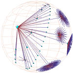
The HyperViewer
software was developed by Tamara Munzner at
Stanford. It is
useful for
visualizing relationships within large graphs such as network
topologies, and is freely distributed as a C++ class
library which calls OpenGL for drawing. See her short paper for
further description, particularly Figure
3 which shows Hyperbolic motion over a 30,000 element
Unix file system. The drawing and picking algorithms are designed
to produce a constant frame-rate by doing the most visible features
first, and hence scales to 100,000-node graphs.
The basic idea is that a graph is presented within a sphere that
resembles a fish-eye lens: objects in the center of the sphere appear
full-sized, but objects get smaller as they approach the surface of the
sphere. A hyperbolic projection is used, which actually maps an
infinite 3D space onto the volume of the finite sphere. M.C.
Escher did likewise
in 2D with hyperbolic
tilings.
Supported platforms, release notes:
- FreeBSD - The first target
system.
- There is a bug in the ATI
Radeon DRI graphics card driver which "tatters" bitmap
text so labels on nodes in the HyperViewer are unreadable.
- A temporary work-around which doesn't require restarting X is
to rename /dev/dri/card0 or
change its mode to prevent access. This will still throw an X
"BadMatch" error_code 8 request_code 156 minor_code 5 when used
remotely, though.
- A better work-around is to comment out the Load "dri" line in the /etc/XF86Config file and restart
X. You will get a normal warning message when starting up any
OpenGL program such as HyperViewer:
Xlib: extension "XFree86-DRI" missing on display ":0.0".
- Windows - Initial version.
- Picking of graph nodes is not working yet due to a PyOpenGL
bug. However, you can pick graph edges. which is equivalent to
picking the node the edge leads to.
- It busy-loops too much on Windows. I'll try to tame that.
- SSH
setup - You connect to XMLRPC on boss.emulab.net via SSH to
retrieve
experiments from the database. On Windows, you can use either the
PuTTY
"plink" command line program or the Cygwin
OpenSSH "ssh" program.
In either case, the proper directory
for plink.exe or ssh.exe has to be on your PATH environment variable,
and you have to have an
SSH key generated and loaded:
- For PuTTY: generate a
dsa key for SSH 2 in putty-keygen; load
it into pageant; and paste the ssh-dss string into Insert Key under
Edit SSH Keys on your "My Emulab" page after logging in at https://www.emulab.net. (PuTTY
includes a good online manual.)
Test that everything is set up, and
accept the Boss host key with:
plink boss.emulab.net
- For OpenSSH: use
ssh-keygen if necessary; start an ssh-agent
and load the key with:
eval `ssh-agent -s`
ssh-add .ssh/id_dsa
Paste the id_dsa.pub into the Emulab
page as above, and do the following once to get boss.emulab.net put
into your .ssh/known_hosts file:
ssh boss.emulab.net
- Note: Unless you have run
the plink or ssh command to boss.emulab.net in a shell, the SSH
setup is not complete! Both of them ask the first time for you to
accept the host key. Until that has been done, the HyperViewer
client program will not be able to connect.
Emulab
user name: If your Emulab user name is different from your login
name, set the EMULAB_USER environment variable to your Emulab user
name. hypview will use that in preference to the USER or USERNAME
variables, and default to "guest" if none of them are set. This
may be over-ridden in the Open/Experiment window.
Emulab project name:
Similarly, if you always use the same project name, you can set it to
default in the EMULAB_PROJECT environment variable.
- Linux - Pretty much untested,
but we're interested in which Linux platforms you want to run on.
Meanwhile, you can build from sources:
- Edit the GNUMakefile to select CPU=linux before building,
- and also select the include of Makefile.linuxwxpy in
hypviewer/Makefile.main .
Package dependencies:
It needs wxPython, which on Unix
requires Python 2.3, wx_GTK2, GTK-x11, Pango, and glib, as well as glX
and
OpenGL. On Windows, the distributions of Python, wxPython, and
PyOpenGL are
self-contained.
Plus wxGlade on top of wxPython if you want to modify the GUI design.
Installing hypview
Getting and unpacking hypview on
Unix/Linux:
- There are binary tarballs for FreeBSD
now.
- There is a top-level hyperviewer directory in the tarball, so
just unpack into the directory of your choice with:
- Test with:
cd hyperviewer
./hypview ts600.hyp
Notice that hypview runs only in the hyperviewer directory
for now.
- You may get an error response like the following, indicating that
wxPython or one of the other library modules it requires is not
installed in your computer:
Traceback (most recent call last):
File "hypview.py", line 17, in ?
from hvFrameUI import *
File "hvFrameUI.py", line 8, in ?
from wxPython.wx import *
ImportError: No module named
wxPython.wx
No problem if so. Just get the supplementary library tarball for
your platform:
FreeBSD-4.9
Unpack into the hyperviewer directory and try running hypview again.
- Note: This is Very Alpha Software. If there is no
supplementary library tarball for your platform, or you still have
problems running with one installed, we want to hear about it.
Please explain in detail.
If you are comfortable installing
wxPython and its dependencies, or having your system administator do
it, we'd still like to hear what version of the system you are running
on when it is working.
Finally, if you have wxPython installed and are still having trouble, you could go
to the
next section on rebuilding hypview from sources.
Getting and unpacking hypview on
Windows:
- You first need Python,
wxWindows, and PyOpenGL. The easy
way is to get it all packaged together in one
exe file, and unpack to the location of your choice.
- The download
size is 25 meg and when installed it becomes 56
meg.
- Check that there isn't already another version of Python 2.2
installed and on the PATH environment variable. No worries
if there is a version other than Python 2.2, they will co-exist fine
because they will be in different directories. If there is
already a Python 2.2 installed, you may just want to install wxWindows
and PyOpenGL in it (below.)
- When run, the .exe file creates a "Python22" directory tree. The default unpack location
is C:\, in which case you can also
unpack these
shortcuts into a Start Menu/Programs folder for the effect of a
normal installation.
- The default unpack
location for the shortcuts is C:\Documents and Settings\All
Users\Start Menu\Programs, so change the "All Users" to your login name
if you are doing a User install instead of All Users, which requires
Administrators group privileges.
- Add the Python
install directory, C:\Python22 by default, following a semi-colon, to the end
of your PATH environment
variable in Control Panel/System/Advanced/Environment Variables.
If there is already a different version of Python installed, you will
need to put the full path to python.exe into the hypview or hypview.bat
scripts mentioned below.
- Another approach
is to download and install the official Windows
versions of
the following components:
- Python
2.2, (Python home page), 8
-> 30 meg, User or Admin install.
- wxWindows
2.4.2, (wxWindows home page),
8 -> 21 meg, User or Admin install, requires reboot.
- PyOpenGL
2.0.0.44, (PyOpenGL
home page), 1.5 -> 5 meg, Admin install only.
- Verify that it's all
working by running
Start/Programs/wxPython 2.4/wxPython DEMO. Click the [+] to open
the "Objects using an external library" branch, click wxGLCanvas, then
the Cube and/or Cone buttons on the Demo tab. An OpenGL canvas
window should pop up. Clicking and moving the mouse in the canvas
rotates the object.
- For hyperviewer, there is a self-extracting WinZip exe
for Windows
2000 and XP. There is a top-level hyperviewer directory in
the exe, so
just unpack into the directory of your choice.
- Test by running
hypview.bat in the hyperviewer directory and
feeding it BigLan.hyp or ts600.hyp. You can double-click it and
use the File/Open menu command, or do this in a command shell:
(In a CygWin BASH shell, you could use the hypview script
instead.)
cd hyperviewer
hypview.bat ts600.hyp
Notice
that hypview runs only in the hyperviewer directory
for now.
Building hypview on Unix/Linux
Full sources for hypview and a version of the hyperviewer library are
included in the release tarballs. There is also a sources-only
tarball you can start with.
Building from sources avoids shared library compatibility
problems, but requires that you have wxPython and its dependencies
installed on your machine first.
- To build the hypviewer C++ library and the _hv.so that is loaded
into Python:
- Edit the path to the ROOTDIR in
hyperviewer/hypviewer/Makefile.main to the absolute path to the
hyperviewer/hypviewer directory. (I'll find a way around that...)
- Then use GNU make in the hyperviewer directory:
cd hyperviewer
gmake -f GNUMakefile
- See
the ROADMAP file if you want to know more about internals.
There are a couple of example files included:
cd hyperviewer
./hypview BigLan.hyp
./hypview ts600.hyp
Building hypview on Windows
Full sources for hypview and a version of the hyperviewer library are
included in the WinZip self-extracting exe file.
There is also a sources-only
tarball you can start with.
You will need to
install Developer Studio 6 with Visual C++ and the Platform SDK (which
includes OpenGL.) VC++ and OpenGL documentation is on the MSDN
library disks.
- Define the PYTHON_INCLUDE and PYTHON_LIB environment variables in
Control Panel/System/Advanced/Environment Variables:
- PYTHON_INCLUDE = C:\Python22\include
- PYTHON_LIB = C:\Python22\libs\python22.lib
- Move the source files that are in the win32 subdirectory up into the main
directory, if that has not already been done. These are the
-DWIN32 versions of the files generated by SWIG, and any Python library
files that are missing from the Windows version of Python.
- To rebuild the hypviewer C++ library and the _hv.dll that gets
loaded
into Python, open the hv.dsw workspace in Developer Studio, and hit F7.
- In the hv.dsp project file, there's a custom build option on hv.i
that calls SWIG to generate _hv.cpp and hv.py. Files should be
up-to-date so you don't need SWIG unless you want to change
things. You can get it from swigwin-1.3.21,
(SWIG home page), and will need WinZip to unpack it. Add the
SWIG install directory onto your PATH environment variable.
- See
the ROADMAP file if you want to know more about internals.
There are a couple of example files included:
cd hyperviewer
hypview.bat BigLan.hyp
hypview.bat ts600.hyp
Running hypview as a script
Running hypview with any dash argument such as -h produces the
following usage
summary:
(Use the hypview script on
Unix/Linux or Cygwin/BASH; hypview.bat
in Windows cmd shells.)
Hyperviewer usage:
No args - Starts up the GUI. Use the File/Open menu item to read a topology.
One arg - A .hyp file name. Read it in and start the GUI, e.g.:
./hypview BigLan.hyp
Two args - Project and experiment names in the database.
Get the topology from XMLRPC, make a .hyp file, start as above.
./hypview testbed BigLan
Three args - Project and experiment names, plus an optional root node name.
./hypview testbed BigLan clan
Using the hypview Graphical User Interface
Getting out: When you want to
leave hypview, pick the
File/Exit menu item, or type Ctrl-Q, or just
close the
window.
Here's an example of the appearance of hypview once it is
running. The pane on the left contains the HyperViewer. The pane on the
right is the control panel.
Mouse: dragging, rotation, and picking
- Pressing the "Help" button, or selecting Help/Usage from the menu
at
the top of the window, or typing Ctrl-H, pops up a window describing
the HyperViewer mouse controls which apply to the left pane:
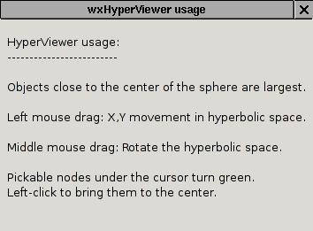
- Dragging:
One way to navigate is to drag the view. Here is a picture
just like the one above, but dragged to the left a bit with the left
mouse button. Notice how the mid-level branching is more
visible.
- You can walk through the graph this way, dragging from top-level
details to lower levels.
- Rotation:
The middle mouse button (or holding down
a control or shift key while clicking the left mouse button) rotates
what is
behind to the front so you can better see it.
- Hint: Graph nodes that appear around the periphery of the sphere
can be dragged to the center of the sphere to magnify them.
Rotate nodes that are in front of or behind of the sphere center plane
into the plane containing the sphere center; then you can drag them to
the center.
- Picking:
As you move the mouse over the boxes representing nodes
(hosts or
lans), they turn bright green. Clicking on a bright green box
selects it to move to the center of the sphere. Its bright yellow
color denotes its selected status. So you can walk through a tree
that way as well.
- Note: Depending on your OpenGL graphics card driver, after
dragging in the same direction a few times, you may find the drawing of
the graph within the sphere becoming "jumpy". This is due to
accumulating error in the OpenGL viewing matrix. Picking a node
resets the matrix and fixes the problem.
Control panel: node controls
The
control panel at the right
is divided into two sections. The
one on the top gives information about the last-selected node, and the
one in the middle controls modes of HyperViewer.
The
node controls include:
- A "go to top" button to re-center the root node,
- The name of the last-selected node,
- The count of children in the spanning tree,
- And for inbound and outbound graph links that are not part of the
spanning tree,
- The count of the Non-tree links connecting to the node,
- "show" and "hide" buttons to make the links visible or
invisible,
- A "descend" check-box which determines whether showing or
hiding apply just to the selected node, or to the sub-tree under the
node.
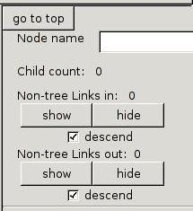
The "show" and "hide" controls are used to explore networks with many
cross-links. HyperViewer computes a minimal spanning tree through
the graph, and just shows that at first. The rest of the graph
links, which cross-link between spanning tree branches, are called
"non-tree links" by HyperViewer. These links are not visible at
first, to cut down on clutter.
The "descend" check-boxes are on by default, causing a "show" or "hide"
to apply to all of the links under the selected node in the minimal
spanning tree. If you uncheck the "descend" options, the "show"
and
"hide" buttons apply only to the selected node, and are greyed-out if
there are no links in to or out of that node.
Here
is an example (ts600.hyp) where the links are then turned on by
clicking either of the "show" buttons for the whole tree (descending
recursively from the root):
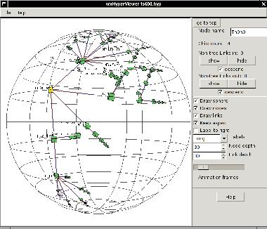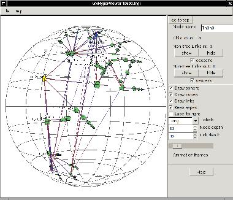
There is another example of using the "show" controls while exploring a
larger Emulab experiment graph
below.
Control panel: mode controls
The
mode
controls are still changing. There are a lot of modes in
HyperViewer to control the drawing and layout of graphs. (There
are no layout controls visible yet.)
Boolean check-boxes (click to toggle):
- Draw {sphere,nodes,links} - Turn off to cut down on
clutter. Bug: turning off nodes turns off links as well.
- Keep aspect - Whether to keep the sphere round as the window is
resized.
- Label to right - Changes the positioning of the text
labels. Default is to the left of a node.
Choices (click to choose one or roll with the mouse wheel):
- Labels: Long, Short, None - How much of the label strings are
shown.
Numbers (type a new value, click the up/down buttons, or roll with the
mouse wheel):
- {Node,Link} depth - Allows showing only a few levels down from
the selected node in very cluttered graphs.
- Animation frames - Controls how many frames per second are drawn
to animate
the change of view when a node is picked as the new center.
Defaults to 12, the range is 1 to 30.
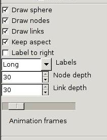
File and Experiment opening
There is one more dialog panel which pops up when you select the
File/Open menu item, or type
Ctrl-O. You can read a .hyp file, or
load an experiment from the database via XML-RPC over SSH.
- There is no browser option yet. Ya just gotta type or
cut-and-paste. (This is Alpha software!)
- For experiments, the optional root node is the host or lan from
which the tree layout starts. If you know it, put it in.
Otherwise the first lan in the database links list is chosen, or the
first host if there are no lans.
- The root node name may optionally be a glob expression, with *, ?, and []
wildcards. In that case we make up a root node name and put the
matching nodes under it. There is an example of why you would
want to do this below.
- You can over-ride the default SSH login name and project name
with the environment variables EMULAB_USER and EMULAB_PROJECT.
For more on setting up the SSH connection to Emulab, see the section above.
- Since HyperViewer is set up to load a file, the experiment option
actually writes a temp .hyp file. You will see the file name on
the window title if you want to save the file.
- On Unix/Linux, the file goes in /tmp. On Windows, it goes
in C:\temp if there is one, otherwise they will accumulate in the
hyperviewer directory.
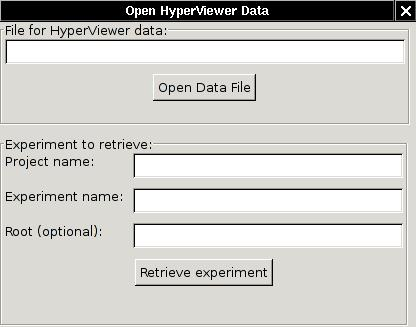
An example
Here's an example of exploring a largish Emulab experiment topology
using hypview.
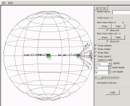
When we first open experiment testbed/2440
(which has 2,611 nodes), the view starts at the first node returned
from the Emulab experiment database, leaf-17-2040-1768.
The rest of the topology trails off in the distance to the right.
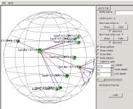
Looking to the right (dragging the view
to the left), we pass nodes named border-17-1949
with many leaf nodes fanning out from it, and border-17-1937 with many other
border nodes fanning out. Clearly we're climbing up a tree
branch, although it's upside-down because the HyperViewer spanning tree
didn't start us at the center.
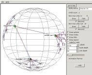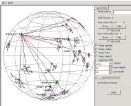
Then we reach a node named interior-16
which is linked to border-17-1936
and interior-19. interior-19 is linked to other
interior nodes. This could be a mesh at the middle of the
tree. (The region we came from is now in the distance in the
upper left corner.)
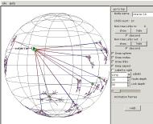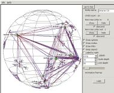
To see the linkage of the central mesh, we pick
node interior-19 and
click on the "show" node control
buttons. Now we're seeing the "non-tree links", not just
the minimal spanning tree, and have learned that the names of the nodes
in the mesh which is really at the root of the tree all start with
"interior-".
 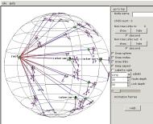
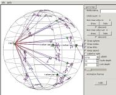
So we open the experiment again, this time
giving the optional root name with a wildcard asterisk: interior-*. A root node is inserted and the
interior nodes fanned out from it.
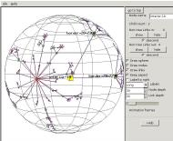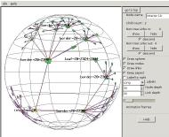
Now we can see the overall structure of the experiment network.
Interior nodes fan out from the root, with a pair of upper border nodes
fanning out from each interior node, and many lower border nodes
fanning out to the many leaf nodes below.
{kind=link}
{kind=link}
{kind=link}
{kind=link}
{kind=link}
{kind=link}

 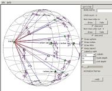
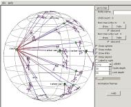